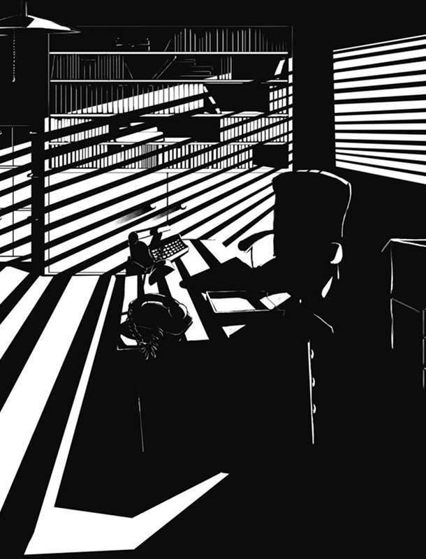

В ПОИСКАХ
СТИЛЯ
Пиксель-арт — это направление цифровой графики, где изображения создаются вручную на уровне отдельных пикселей. Художник кропотливо прорисовывает каждый квадрат, из-за чего готовая картинка напоминает мозаику, вышивку крестиком или стиль классических 8-битных видеоигр.
Готический художественный стиль — это направление в европейском искусстве (преимущественно архитектуре, живописи и скульптуре) средних веков, которое зародилось в середине XII века и доминировало до XV–XVI веков. Этот стиль характеризуется особой мрачной эстетикой, устремленностью ввысь, причудливостью форм и тесной связью с религиозными и мистическими темами.
Визуальный стиль нуар — это эстетика мрачных криминальных драм, зародившаяся в американском кино 1940-х годов. Для него характерен глубокий пессимизм, а главными инструментами выразительности выступают резкие контрасты света и тени, нагнетающие атмосферу недоверия и одиночества.

GOTHIC
ГОТИКА
GOTHIC
ГОТИКА
NOIR
НУАР
NOIR
НУАР